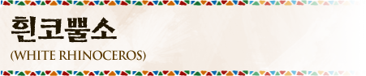

- White Rhinoceros는 초기에 "넓은 입"을 뜻하는 아프리카어 "widje"를 "white"로 잘못 해석하여 생겨난 이름이에요.
- 귀 끝과 꼬리 끝, 그리고 듬성듬성 있는 털을 제외하고는 몸에 거의 털이 없어요.
- 이마 위에 두 개의 뿔을 가지고 있는데 앞 쪽에 있는 뿔이 더 길고 암컷의 뿔이 수컷보다 약간 더 길어요.
- 흰코뿔소의 고기 그리고 특히 뿔을 목적으로 사냥과 밀렵이 크게 성행했어요.
- Southern White Rhino 아종의 경우 1893년 경에는 완전히 멸종한 것으로 여겨질 정도로 18~19세기에 그 수가 급격하게 감소하였어요. 지금도 동남아 등지에서 코뿔소 뿔을 먹는 문화 때문에 많은 코뿔소가 밀렵되고 있어 보호가 필요해요.
- 하루의 50%는 대부분 먹이를 먹으며 이동하는 데에 시간을 보내요. 한낮에는 보통 그늘진 곳에서 휴식을 취하며, 눕거나 서서 잠을 자요.
- 진흙에서 뒹구는 행동을 즐겨하는데, 몸에 진흙을 묻히면 진흙이 말라 떨어지면서 진드기가 제거되고, 곤충에게 물리는 일도 적어져요. 또 체온을 낮추는 데에도 도움이 된답니다.
- 시력은 약하나 청각과 특히 후각은 뛰어나요. 시력이 약해서 흥분하면 무조건 앞으로 뛰는 습성이 있어요.
- 대부분 짧은 풀을 뜯어먹기 때문에 입술이 넓고 편평한 네모 모양이에요. 풀을 25mm 정도로 매우 짧게 남겨 놓고 뜯어먹을 수 있어요.
- 코뿔소의 뿔은 뼈가 아닌 단단한 각질로 이루어져 있고 손발톱이나 발굽과 같은 물질이에요. 평생 지속적으로 자라기 때문에 부러지거나 잘라내도 다시 자라나요.
- 학명
- Ceratotherium simum
- 분류
- 기제목 코뿔소과
- 멸종등급
- IUCN 적색목록 준위기종(NT, Near Threatened), CITES I (남아프리카공화국과 스와질랜드는 CITES II)
- 분포
- 남아프리카
- 서식지
- 초원
- 먹이
- 풀
- 크기
- 몸길이 수컷 3.7~4m, 암컷 3.4~3.65m, 꼬리길이 70cm. 어깨높이 수컷 1.7~1.86m,암컷 1.6~1.77m, 몸무게 수컷 2.3톤,암컷 1.7톤
- 사회구조
- 한 무리는 보통 어미와 새끼로 이루어져 있어요. 여러마리의 암컷과 그 새끼들이 모여 보다 더 큰 무리가 형성되기도 해요.

로스트 밸리 동물카드 모으기!
로스트 밸리 홈페이지의
탐험하기 메뉴에서 동물카드를 모아보세요.
모든 동물 카드를 모으면
온라인 탐사 자격증을 만드실 수 있습니다.